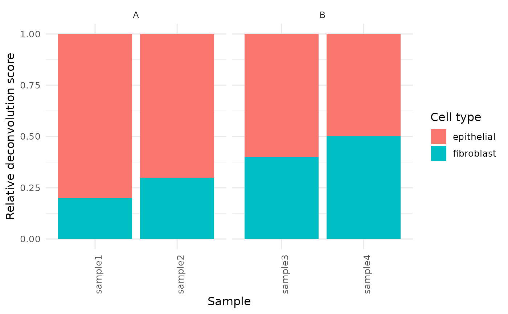

Plot cell-type composition as stacked bars
Arguments
- x
A VISTA object.
- group_column
Optional column in
sample_info(x)used to facet/order samples. IfNULL, uses the active VISTA group column when available.- sample_names
Optional character vector of sample names to include.
- base_size
Base font size.
- cell_types
Optional character vector of cell types to keep.
- top_n
Optional top-N cell types by mean score (ignored when
cell_typesis provided).- collapse_other
Logical; collapse non-selected cell types into
"Other".- normalize
One of
"sample"(default; per-sample relative scores) or"none".- facet_by
Faceting mode:
"group"(default) or"none".
Examples
mat <- matrix(rpois(20, lambda = 20), nrow = 5)
rownames(mat) <- paste0("gene", seq_len(5))
colnames(mat) <- paste0("sample", seq_len(4))
se <- SummarizedExperiment::SummarizedExperiment(
assays = list(norm_counts = mat),
colData = S4Vectors::DataFrame(
cond = c("A", "A", "B", "B"),
row.names = colnames(mat)
),
rowData = S4Vectors::DataFrame(
gene_id = rownames(mat),
row.names = rownames(mat)
)
)
v <- as_vista(se, group_column = "cond")
md <- S4Vectors::metadata(v)
md$cell_fractions <- data.frame(
fibroblast = c(0.2, 0.3, 0.4, 0.5),
epithelial = c(0.8, 0.7, 0.6, 0.5),
row.names = colnames(mat)
)
S4Vectors::metadata(v) <- md
get_celltype_barplot(v, group_column = "cond")
